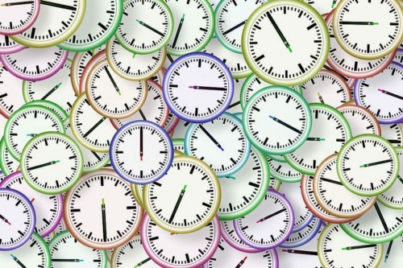
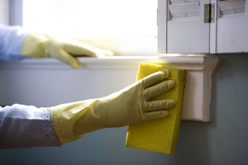
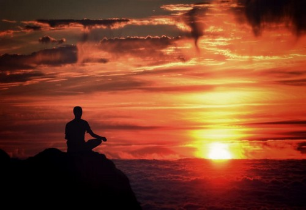
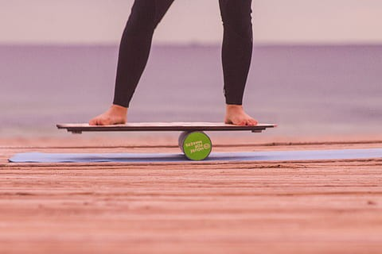
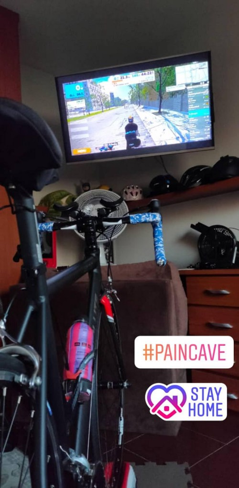
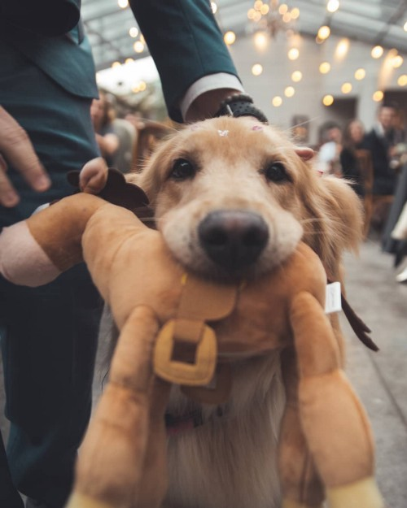

Bruno Gurgel
June 10, 2020
Quarantine Little Habits
What I’m gonna miss after COVID-19 pandemic crisis
It was not long ago when we could walk in the park, shop, hang out with friends or go out for a meal at a great restaurant across the city. We were free to move around and do wherever we wanted without having any idea that a huge pandemic to be caused by COVID-19 was looming.
The nightmare arrived and hit hard everybody’s routines; many of us are now facing a new work reality, in a different environment, with different distractions like family, pets, noises, and even the short distance between our fridge and our workstations. For now, social distancing is the proven best way to help us go through this pandemic and staying at home is a new challenge for many of us.
By doing a reflection, during years and years of life, I wished some extra minutes or hours in my day. I had always complained a lot about not having time to do important things and blamed time (or actually the lack thereof) for many of my shortcomings. How not to wish for a little extra time? What seemed impossible, now just happened!

Suddenly we just got some of our precious time back from activities we can no longer pursue such as: commuting, going to restaurants for lunch or dinner or even that time moving from meeting rooms or offices, attending external meetings, going to the gym or groceries shopping etc. Using myself as an example, commuting alone took 1.5 hour daily.
Of course many of us are now living a new reality at home, with our parents, significant others, children, pets, coupled with cleaning activities and some other things that also consume some of our time. For example, I’m quite new to many of the home heavy tasks like cleaning the bathroom or the kitchen, and these are not easy tasks, so it takes me a lot of effort and time. Others are facing homeschooling activities, which can demand several hours (for both children and parents sometimes) and be a huge challenge in itself.

With positive or negative hours the reality is quite different now, we are all living in an adapted situation that may require some increased awareness. With all these new challenges, with all the new efforts, with all the time the we gained or lost, we may need to ask ourselves: Are we ready to spend more time with ourselves?
Our time values more than money. Truly, way more than money. Are you aware about how this new reality has affected your routine and how well are you investing your time? As many of us are living in autopilot mode, this extra time just does not exist. Our autopilot mode gave us 15 extra minutes in bed, a new series to binge on Amazon Prime, or maybe one extra episode of our favorite series ever, Friends, but way more dangerous than that, some extra hours scrolling through social networking apps like Facebook, Instagram or TikTok. Time flies faster when we are entertained, for the good and for the bad.
As almost everybody, I was not ready for a home office routine, but as I had just been through a life transformation, my autopilot was completely out of service. I had the opportunity to truly understand and plan how this extra time would be impacting my routine and make some choices and exercise others. Of course the option of running, riding a bicycle, reading 100 pages per day and all the things I haven’t had time till now was not sustainable. Balance is the most important lesson I’ve been learning so far. My time awareness grows, as my conscious decisions too. Now more than ever I understand that I need to be fully aware of how to spend my precious time.
This is some of the habits I gave a try during quarantine, some of then successfully, and some are still in trial mode:
Meditation
Learning about how to quiet our mind can benefit us in many aspects. It’s important that this is one of the most huge gaps that I open. I was skeptical about it. Today, after over 45 days of an adjusted routine, I can say that my focus and my sleep were positively affected by the new habit of meditation. It’s now the first thing I do when I wake up and the last thing I do before going to bed. Investment: 20 minutes per day.

Yoga / Stretching
Awareness of my body is quite a new thing for me, I feel parts of my body that I didn’t even know existed before. I was also skeptical with Yoga, but it seems to be a good stretching alternative for relieving some of the pain I had. While stretching has already become part of my routine, yoga is still in trial mode. Investment: 20 minutes per day.
Audiobooks
This may be the best thing I tried during this pandemic. I was not a book reader, I always left this good habit aside for some screen scrolling of social networks. But with audiobooks I feel that I can do small activities while I’m listening to interesting content. Balance boarding, dog walking, cooking, and every small activity now is an excuse and opportunity to listen to my audiobooks. Audible and 12 minutes were the apps that I picked for this journey. Investment: 30 minutes (not exclusively dedicated) per day.
Balance Board
Somehow I get very happy when I’m facing a body balance challenge. Later I understood that there are a lot of benefits to your body core when you improve your balance. As I used to skateboard as a teenager, at the beginning I was also able to connect with good memories. Investment: 15 minutes (not exclusively dedicated) 3 times a week.

Bike Roller
As I have decided to strictly follow all the policies deployed in my city, I had to stop running in the streets. I’ve tried to run with the mask but it felt uncomfortable. I used to run 10k to 15k a week. When I understood that would not be an option anymore, I switched all my efforts to bike roller with Zwift. This is where balance hits me hard. May was the month I tried to ride at least 5 days a week, 100k to 120k weekly. It was not sustainable, as I understood that running and riding a bike are complementary exercises and I can’t overtrain one to compensate another. For those that will try bike roller for the first time, please take into consideration cyclists biomechanics and set up your bicycle before riding many kilometers; this is a life changing experience and will avoid a lot of pain. Investment: 45 minutes 3 times a week 
Dog Walking
Just a little after my life changed completely, my wife and I decided to adopt Stella, a 4 year old Golden Retriever, rescued from a bankrupt canil. She changed my life in so many aspects that I can dedicate a full story to that later, but to my point, every day I spent at least 30 to 40 minutes walking her daily, around 2–3 km. Investment: 20 minutes 2 times per day.

Writing
As you are reading this now, this is one of the habits I’m struggling with the most. While I felt I could use my personal experience to help other people that have been through many of the situations and challenges that I’ve been through, recording a video or audio was not the best way of doing that. So I decided to write, as I understand that I never did this well, even back in school. I was never attracted to writing, but now I’m positive about aiming for a good reason and improving a poor skill at the same time. Investment: 10–15 minutes per day.
Mixing new habits
As you can see, many of my new habits can be mixed and matched for some extra productivity. I can listen to an audiobook while roller , dog walking or even balance boarding. But the activity I like to do the most while listening to my books is cooking, which has always been a hobby of mine and that I’m also dedicating some extra time during quarantine.
Conclusion
To my point, as you probably got it, I’ll miss riding a bike during my lunch break or even during a meeting. I’ll miss preparing my own lunch while listening to an audiobook or enjoying my balance board. But some of these little habits I’ll need to figure out how to prioritize like stretching, yoga, meditation and maybe even writing. When the nightmare is over, we will need to find our balance again; that’s part of our life journey. Aversion to routine changes was one of my struggles since the beginning. I was really hard on myself not only to plan my routine but to strictly follow the plan. For me, life is not about following the script, but about how to adapt our best script to everything else we CAN’T control. I have been practicing this for a while, evolving, sure I’ll be good at it someday. As the message of this text is about our daily awareness of how we spend our time during this pandemic, it’s important to say, do not freak out. Be kind to yourself. It’s ok not to feel productive, it’s ok to not to feel great everyday. We are not alone in this pandemic, millions of people are facing the same feelings, with new routines, anxiety and fears. Let our empathy flow to help the ones in need and if you’re not ok, do not struggle alone. There are many available tools to help with our struggles, so see this challenging time as an opportunity to find the best one for yourself. You may not get the right one the first time around, but more important than that is to give yourself a try.